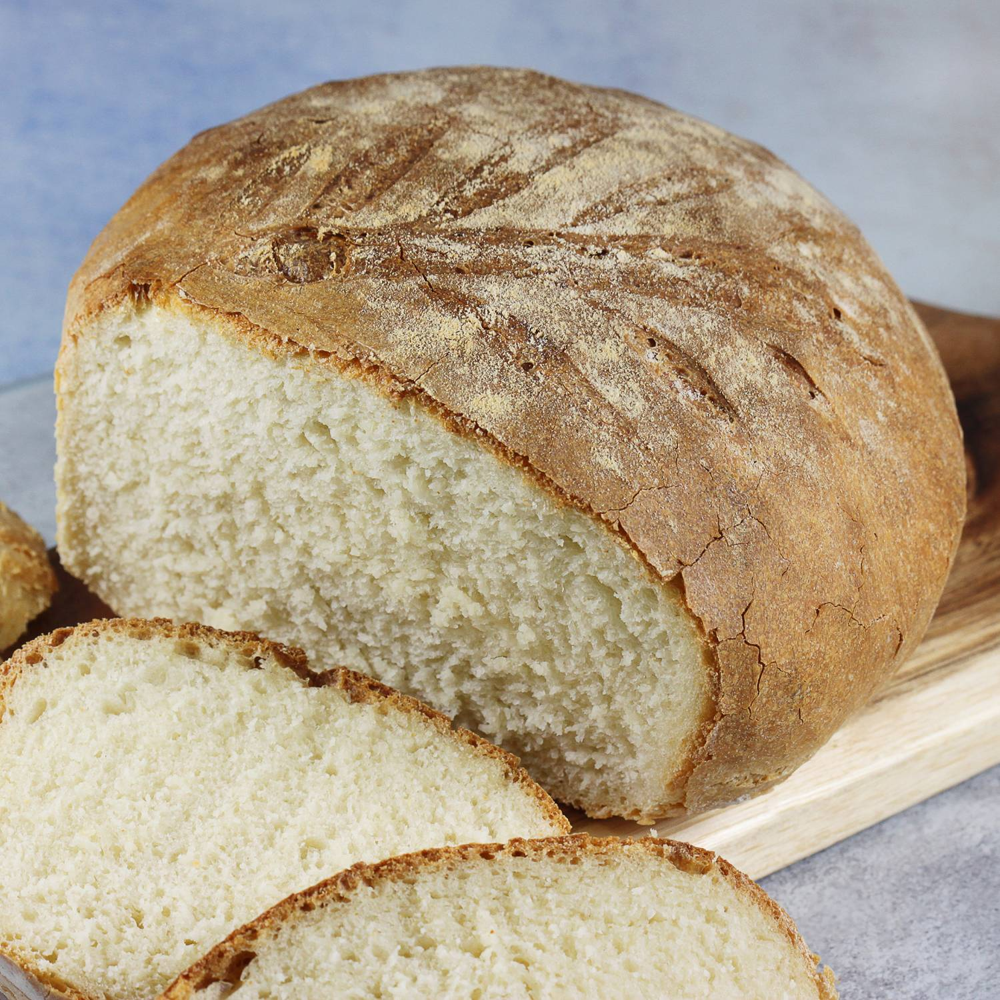
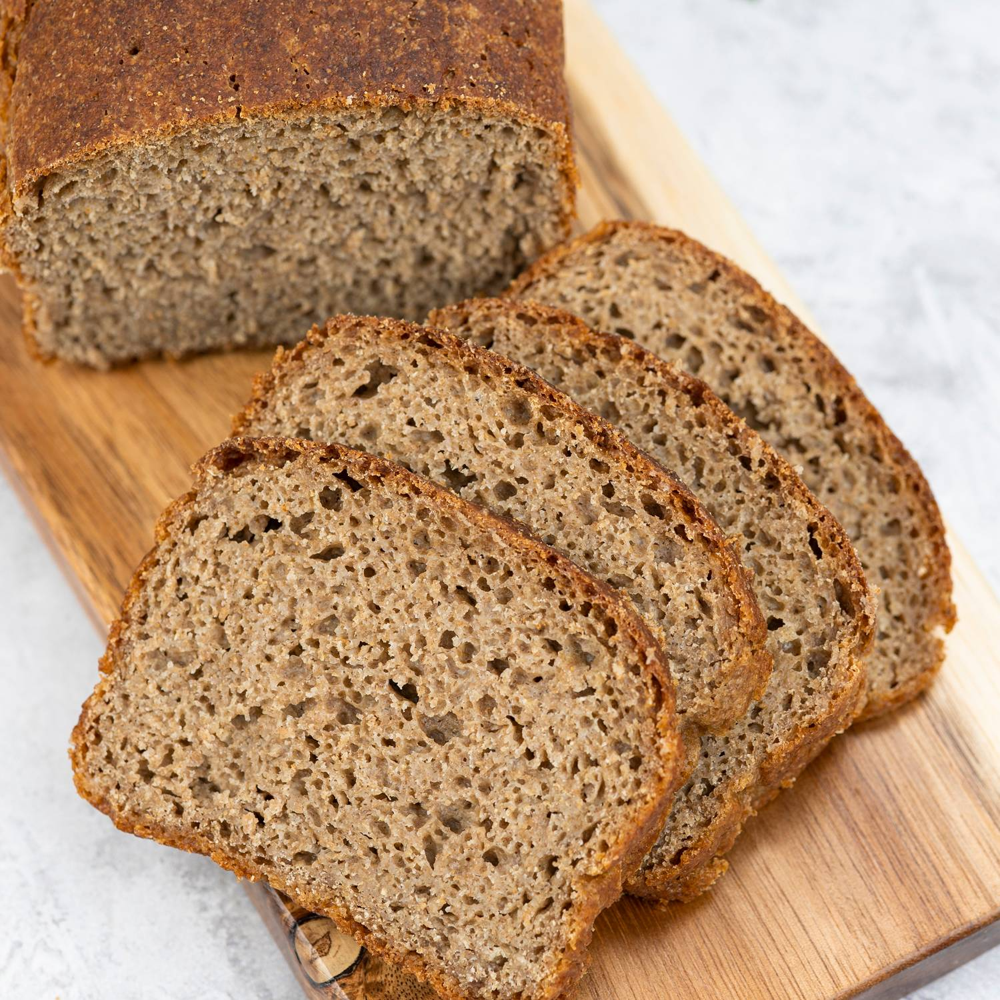
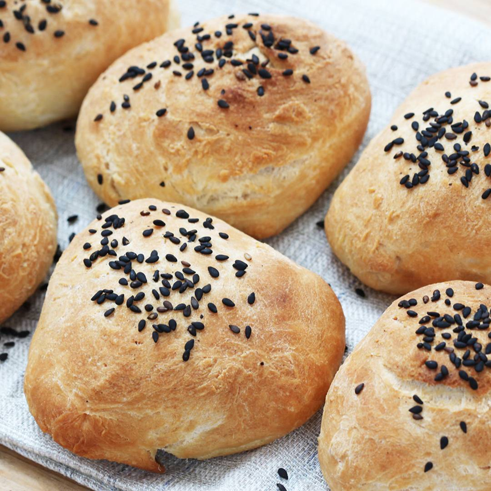
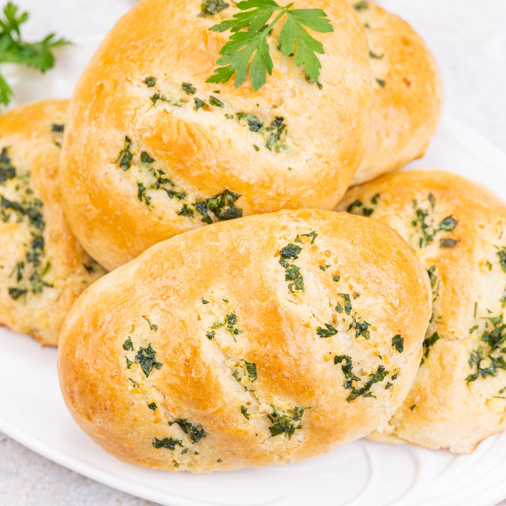
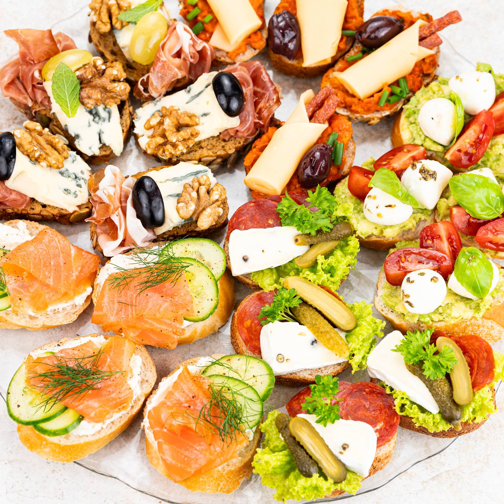

Wszystkie przepisy pochodzą ze strony aniagotuje.pl.

PRZEPIS NA PYSZNY CHLEBEK PSZENNY
czego potrzebujesz: około 2,5 szklanki mąki pszennej, najlepiej typ. 00 1 szklanka ciepłej wody łyżka delikatnej oliwy płaska łyżeczka suchych drożdży lub 15 gramów świeżych płaska łyżeczka soli płaska łyżeczka cukru

PRZEPIS NA PYSZNY CHLEBEK żYTNI
czego potrzebujesz: 2 szklanki mąki żytniej pełnoziarnistej typ. 2000 1 szklanka mąki żytniej jasnej typ.720 1,5 szklanki lekko ciepłej wody 1 saszetka zakwasu żytniego suszonego - 15 g (lub 50 g domowego zakwasu) 1 saszetka drożdży suszonych instant - 7 g (lub 20 gramów świeżych) 1 łyżka oliwy lub innego oleju roślinnego po płaskiej łyżeczce cukru i soli

PRZEPIS NA BUŁECZKI MIĘCIUTKIE PYSZNIUTKIE
czego potrzebujesz: 7 g suchych drożdży lub 20 g świeżych 400 g mąki - najlepiej typ. 550 po łyżeczce cukru i soli 1 szklanka ciepłej wody - 250 ml łyżka oliwy z oliwek do ciasta + około 20 ml oliwy 2 łyżki sezamu

BUŁECZKI CZOSTKOWE MMMMM...
czego potrzebujesz: 2,5 szklanki mąki pszennej np. tortowej 7 g drożdży instant niecałe pół szklanki wody niecałe pół szklanki mleka po płaskiej łyżeczce soli i cukru łyżka miękkiego masła 50 g lekko miękkiego masła 4 ząbki czosnku mała garść natki pietruszki pół płaskiej łyżeczki soli

KANAPECZKI? PROSZĘ SIĘ CZĘSTOWAĆ!
czego potrzebujesz: 80 g bagietki - krojona na 8 kromek 120 g łososia wędzonego na zimno 80 g serka poszystego np. naturalnego do 40 g świeżego ogórka np. szklarniowego odrobina świeżego koperku i pieprzu * 80 g bułki z ziarnami - krojona na 8 kromek 40 g plasterków szynki parmeńskiej 80 g ulubionego sera pleśniowego 4 winogrona - około 15 g do 40 g orzechów włoskich - 8 połówek * 80 g bagietki - krojona na 8 kromek pół awokado + łyżeczka soku z cytryny i oliwy + pieprz 120 g mozzarelli z zalewy - najlepiej mini kulki 40 g mini pomidorków - do 8 sztuk listki bazylii i suszone oregano * 80 g bułki grahamki - krojona na 8 kromek 40 g cienkich kabanosów 80 g ulubionej pasty - np. domowy Ajvar 80 g plasterków żółtego sera 25 ulubionych oliwek - u mnie kalamata odrobiona szczypiorku * 80 g bułki grahamki - krojona na 8 kromek 40 g plasterków ulubionego salami 40 g sera Camembert np. z pieprzem 25 g mini ogórków konserwowych kilka listków sałaty karbowanej odrobina natki pietruszki